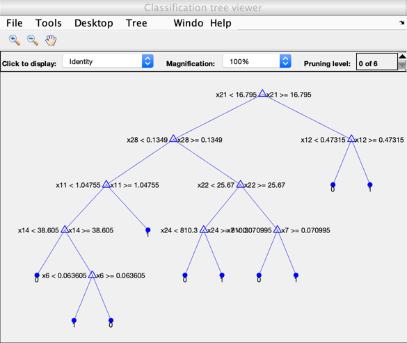

data = readtable('bc_wisc.csv');
data = data.Variables;
train = data(1:400,:);
test = data(401:end,:);
disp('2a)');
X_train = train(:,3:end);
y_train = train(:,2);
X_test= test(:,3:end);
y_test = test(:,2);
tree = fitctree(X_train,y_train);
y_pred = predict(tree,X_test);
accuracy = sum(y_pred==y_test)/size(y_test,1);
fprintf("Fraction of test points correctly classified by decision tree = %f \n", accuracy);
disp('2b)');
view(tree, 'Mode', 'Graph')
snapnow;
top_features = tree.CutPredictor(1:7);
fprintf("Features that are considered as important by the decision tree : ");
for i=1:7
val = top_features{i};
if(~isempty(val))
f = str2num(val(2:end));
fprintf("%d,",f);
end
end
fprintf("\n")
disp('2c)');
num_samples = 300;
y_pred_s = zeros(size(X_test,1),100);
top_features = zeros(30,1);
for i=1:100
[~, idx] = datasample(X_train, num_samples);
tree = fitctree(X_train(idx,:), y_train(idx,:));
y_pred_s(:,i) = predict(tree,X_test);
top_features = top_features + important_features(tree);
end
y_pred = mode(y_pred_s,2);
accuracy = sum(y_pred==y_test)/size(y_test,1);
fprintf("Fraction of test points correctly classified by bagging of decision trees = %f, which is better that the accuracy in 2b \n", accuracy);
[top_features_sorted , top_features_order] = sort(top_features,'descend');
tf = top_features_order(1:5);
disp('2d)');
fprintf("Features that are considered as important overall, ranked according to number of times they appear as important \n amonge 100 trees in the ensemble : ");
for i=1:5
fprintf("%d,", tf(i));
end
fprintf("\n");
function top_featues = important_features(tree)
top_featues = zeros(30,1);
cut_pred = tree.CutPredictor(1:7);
for i=1:7
val = cut_pred{i};
if(~isempty(val))
top_featues(str2num(val(2:end))) = 1;
end
end
end
2a)
Fraction of test points correctly classified by decision tree = 0.943750
2b)

Features that are considered as important by the decision tree : 21,28,12,11,22,
2c)
Fraction of test points correctly classified by bagging of decision trees = 0.962500, which is better that the accuracy in 2b
2d)
Features that are considered as important overall, ranked according to number of times they appear as important
amonge 100 trees in the ensemble : 28,21,2,23,11,